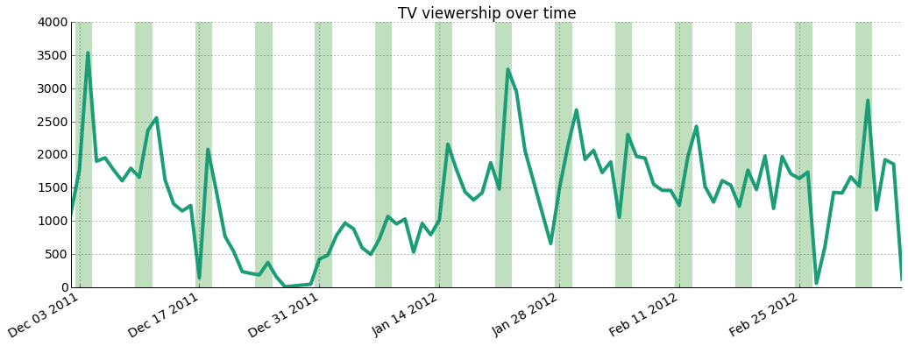
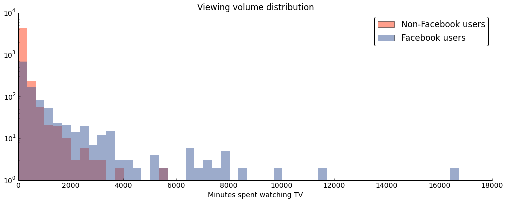
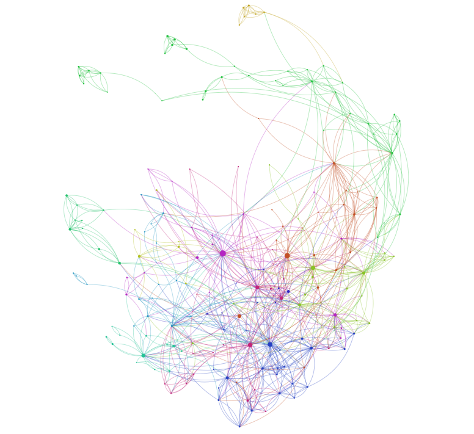
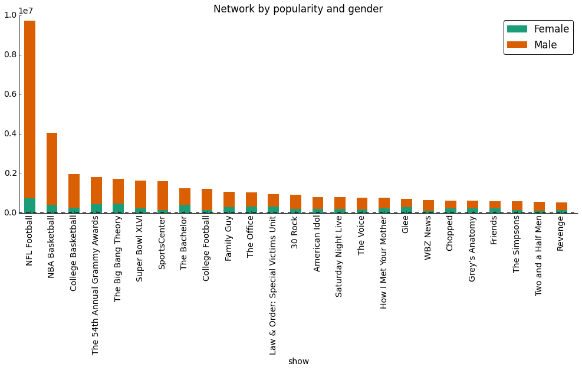

From Nielsen to comScore, TV ratings are big business, yet the state of the art in data collection is surprisingly coarse. If we had access to up-to-the-second invididual viewing patterns, what could we do? Let's find out.
Driven by strong business incentives and the rise of technology-empowered user tracking, television recommendation systems have grown ever more sophisticated and elaborated. There are more ways than ever today to discover new shows and movies to watch, from websites such as IMDB to smartphone apps, smart TVs, and subscription services which provide on-demand access to content and user ratings.
However, many of the methods developed for product and content recommendations are ill-suited for live content, such as on cable TV, where a user is forced to select from whatever content is available at that time. Unlike on-demand services (like Netflix or Hulu) where the user can choose which show or movie to watch next from an expansive list of content, the cable TV viewer is left with only one option: switching the channel. Live TV is inherently dynamic: a show that is airing at this moment will likely be over in a hour, creating an ever-changing time and network-dependent patchwork of content.
In addition, current TV interaction patterns have no feedback loop: there are no star ratings on live TV. Without a direct measure of user preference, how do we make good recommendations? We will demonstrate that these characteristics necessitate unique recommendation system for cable TV content. We develop "stickiness" — a dynamic, behavior-dependent metric to measure TV show engagement. This work provides the building block and a solid metric from which existing recommender system technology could be built upon.
This project is based on a private dataset provided by campus TV streaming startup Philo, formerly known as Tivli. The data includes:
The data represents a log from the CDN which served video snippets in 5 second increments to each user's computer. The data was acquired with a MATLAB script which querying the MongoDB datastores on each video server. After being cleaned up to remove artifacts, the data consisted of 131,902 datapoints. Users could log into the site either as a guest user on the Harvard network or through Facebook. For those users who chose to register via Facebook, we augmented the dataset with gender data pulled from the Facebook Graph API.
During the data collection period, users could select from a selection of live content on the following channels:
|
|
|
As shown below, the dataset covers a 3 month period starting December 2011 and ending at the beginning of March 2012. The highest traffic is seen over weekends (highlighted by green bars) and there's an important slump over Winter Break, where students were away from campus and unable to tune in.
The figure below shows the sparsity of the dataset and the enormous skew towards low volume viewers — note that the y axis is logarithmic.
The histogram also highlights an important property of the dataset: while we have more information about Facebook users, their behavior differs from non-Facebook users. Namely, they are less engaged, likely because of technical limitations: session cookies don't sync across devices and are sometimes erased by the user, leading to users being represented twice under different session IDs.
We first looked at how many unique viewers each show had over the dataset and the amount of time watched in total by everyone of each show. As you can see from the table below listing the top 20 shows watched by number of viewers, college students seem to really love their sports, whether it be football or basketball.
| Show Title | Unique viewers | Hours watched by everyone |
| NFL Football | 1117 | 2689 |
| NBA Basketball | 587 | 1121 |
| WBZ News | 454 | 168 |
| College Basketball | 445 | 525 |
| The Big Bang Theory | 441 | 469 |
| The Office | 381 | 277 |
| The Simpsons | 373 | 154 |
| American Idol | 363 | 217 |
| How I Met Your Mother | 344 | 204 |
| Super Bowl XLVI | 337 | 452 |
| Family Guy | 330 | 291 |
| Jeopardy! | 323 | 132 |
| 7 News | 307 | 105 |
| The 54th Annual Grammy Awards | 301 | 498 |
| 30 Rock | 300 | 250 |
| Two and a Half Men | 293 | 150 |
| FOX NFL Postgame | 259 | 84 |
| The Bachelor | 256 | 338 |
| 60 Minutes | 252 | 94 |
| College Football | 250 | 335 |
The above table doesn't tell the whole story. While college students seem to tune in much more to watch sports, we also see news taking the third spot as well, which we wouldn't expect from college students. Are students at Harvard really that world-conscious? (Many at the college would have you think so.) We also notice that special events, such as the Super Bowl and the Grammy Awards are also high on the list, even though they are only on for one day each out of the whole year.
One important aspect which is missing from the table is the length of time each show was on TV. Shows which are on TV for longer periods of time will usually be watched longer than shorter shows. While NBA Basketball or WBZ News is on for hours both during the week and on weekends, new episodes of network sitcoms and series only come out once a week, either 30 minutes or an hour at a time. If we just looked at how long each user watched each show, we would be missing a large chunk of the picture:
| Show | Hours on TV |
| SportsCenter | 518 |
| College Basketball | 357 |
| WBZ News | 268 |
| Paid Programming | 253 |
| Family Guy | 222 |
| Today | 201 |
| The Big Bang Theory | 182 |
| CNN Newsroom | 178 |
| NBA Basketball | 162 |
| Law & Order: Special Victims Unit | 158 |
| 7 News | 148 |
| Fox 25 News at 10 | 143 |
| How I Met Your Mother | 140 |
| Jersey Shore | 140 |
| Two and a Half Men | 138 |
| Chopped | 128 |
| The Office | 128 |
| Kourtney & Kim Take New York | 127 |
| Seinfeld | 124 |
| Friends | 122 |
As you can see from this list of top 20 shows on TV, WBZ News is also on for a very long period of time, as well as other news shows, as well as College Basketball. This we will need to take into consideration later when we build a model to start making TV show recommendations.
Furthermore, another way the data is affected is by what is on TV at any given time. Whether it's primetime on a weekday or 5 in the morning on a weekend matters when it comes to recommendations. Not enough good shows on, and a user might pick a show that they truly dislike because it's the "only thing on." From looking at the data, we can make some conclusions about users who watch Philo:
We leveraged the unique nature of our online TV viewership dataset to develop what we call "stickiness", a dynamic measure of viewer engagement. To create the metric, we used on the Markov Models in conjunction with the PageRank algorithm.
A user watching cable TV, whether through a cable box or an Internet cable TV provider such as Philo, will watch a variety of shows over his or her lifetime with the provider. However, a cable TV is fundamentally different from on-demand TV content providers, such as Netflix, Hulu, or YouTube. Important differences include limited content availability at any given time on cable: content is curated by the provider rather than selected by the user. In addition, cable lacks content rating and robust user and usage tracking. These characteristics make it very challenging to provide relevant content recommendations to cable TV viewers.
Taking into account the nature of content availability on TV, we can measure TV show stickiness by determining which TV shows capture a user's attention the most — what keeps them most engaged. We define 'stickiness' as the proportion of time that a user watches a given TV show relative to the length of the show available at that time. Stickiness helps us understand how likely a user is to watch the show instead of switching to a different one.
After multiple iterations (described in more detail on our Github), we came up with the following Markov Model. We added an edge between show A and show B when a user switched the channel from A to B in the same viewing session, where a "viewing session" is defined as a set of neighboring shows. We created a directed graph by determining show crossing for each user in our data set for the entire three-month period.
We then normalized the edge crossings by the length of time the show was on TV in that viewing session. That is, we normalized the edge weights from show A to show B by setting them equal to the stickiness of show B when coming from show A. In other words, the stickiness of B after moving from A equals the transition probability from show A to show B. One can think of it as "the probability of being fully engaged at B given currently at show A." The higher the stickiness of B when coming from A, the higher the probability of staying at show B and watching it to the end. We perform these calculations for every user and show in the dataset to produce an array of edge weights for every edge, where each entry corresponds to a normalized transition a user made between the two shows. We calculate the mean and standard deviation for these arrays at each edge.
We used PageRank as our metric. PageRank is useful here as it roughly corresponds to a user randomly starting from a show and switching the channel until he or she finds a show to watch. This corresponds to walking along edges with preference to higher weighted edges on our model. Accordingly, in the context of our network, higher PageRank score is a good proxy for stickiness.
Lastly, we we bootstrapped the PageRank calculation by randomizing the edge weights based on their means and standard deviations (i.e. adding Gaussian noise) and then calculated the PageRank at each node. We performed 1000 iterations. We then set the mean PageRank over these iterations to each node to get a new, bootstrapped version which accounts for large edge weight uncertainty.
The graph below shows the resulting network. Each node's size is determined by its PageRank: the larger the PageRank score, the bigger the node. Node and edge coloring is determined by modularity, which groups shows with similar structural characteritics within the network together. A brief investigation indicated that this coloring is meaningful in that the modularity very closely corresponds to grouping by show type: sports tend to be grouped together, so do comedies, dramas, etc.
To determine the stickiness of a show at a certain time and date, we can filter the network and display only the relevant nodes. The interactive visualization below implements this.
We undertook two classification sub-projects: classifying shows into genres based on their description data, and classifying users into gender groups based on their viewing patterns. Both of these projects aimed to fill gaps in the data — for many shows, we had only general category data ("Series," "Other," "General," or "Special") instead of genre-specific information. Likewise, for those users for which we didn't have Facebook IDs, we could not pull gender data from the Facebook API.
Using the output of the classifier, the stacked bar graph below shows the gender distribution among the most popular shows.
Much of the work for this portion of the project lay in the cleaning, trimming, and reshaping of the data. In order to get our genre data into a usable format for scikit-learn, we had to concatenate all episode description data, clean out unecessary punctuation, and make choices about what to do in cases of missing data. In order to prepare the gender data, we created a new data frame with a row for each user and a column for share of time spent viewing each of the shows and networks we chose. Feature selection was also important in both of these lines of work. For the genre project, we had to select the number of words that "mattered" in our model, and we used univariate chi-squared feature selection to take the top 1% most-influential words. For the gender data, we selected the shows and movies that had the largest male and female skews in viewership, with exactly 10 shows and 5 networks for each group (numbers selected after taking an intial view of the data). Choosing which machine-learning algorithm to use for each classifier was relatively easy - we used SVM for the genres and KNN for the gender groups. However, we felt that both of these sub-projects would have benefitted from larger data sets. After all the trimming, relabeling, shaping, and careful selection fo model parameters, we were still somewhat underwhelmed with our final results.
Putting it all together, let's tell the story of Sunday December 4, 2011. The interactive visualization to the right shows a row for each user watching at 9pm, with viewership blocks color coded by network.
Users are watching many different shows, let's start making sense of the data by grouping by most popular show. Orange — which is NFL Football — comes in first, followed by Desperate Housewives and Family Guy. The trend is clearer if we align the blocks — essentially creating a bar graph. (undo)
Let's sort by viewing start time. The big uptick at the top of the hour is apparent, with a start time evenly spread out throughout the rest of the hour. Note, however, that NFL Football (orange bars) is congregated in the bottom half and viewers are tuning in more sporadically.
Using the data generated by the classifier, let's group by gender. There are much more men (top group) watching at this time. We can of course perform the same actions on the grouped data: let's sort by show and align the result. As one might expect, NFL Football is very popular among men. Finally, undo the grouping.
Let's sort by users who switch channels often. The Good Wife and Desperate Housewives are quite present at the top — users are switching between those shows a lot. Let's recolor and sort the blocks as a function of our measure of show stickiness. Hovering over the bottom blocks show that both The Good Wife and Desperate Housewives indeed have low stickiness.
NFL Football highlights an important aspect of the methodology: stickiness is calculated for all shows aired, not a particular episode (because there isn't enough data) based on the assumption that shows are periodic and are always competing for attention against the same set of shows. NFL breaks that assumption: it is generally very sticky, except when Family Guy is also on, as is the case in this time window. Therefore, our measure greatly overestimates its stickiness, but it'd be easy to remove this assumption with more data.
Let's look at a different time period: February 12, 2012. That period was far more busy — the bars are much thinner — and is dominated by the 54th Annual Grammy Awards (blue bars). After sorting by viewership and aligning the result, it's clear there's a linear dropout of Grammy viewers, hinting at low stickiness.
As before, let's recolor and sort the blocks. Indeed, the Grammys are shown in light green as very unsticky.
Our work provides an important contribution for content recommendation systems by proposing a measure that infers user preferences from the data itself, rather than requiring explicit input from user (eg. in the form of a star rating). As proposed here, stickiness could be used as the metric to be optimized by a standard recommendation system and can be used as a proxy for global user preference in the context of dynamically changing set of options.
We likewise took a small step toward personification by demonstrating that we can infer user and data characteristics via machine learning methods. It is our hope that this study will prove useful to developing user-specific recommender for dynamic content, even beyond the one found on cable TV.